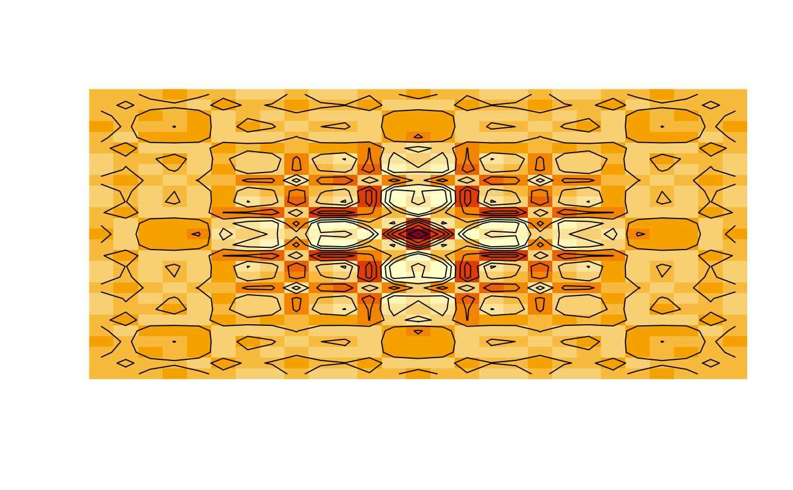

Creates matrices for vectorized evaluations of 2-D scalar/vector fields over
2-D grids.
Arguments
- x
Numeric vector representing the first coordinate of the grid.
- y
Numeric vector representing the second coordinate of the grid.
Value
A list of matrices.
Examples
mg <- meshgrid(linspace(-4 * pi, 4 * pi, 27)) # list of input matrices
z <- cos(mg[[1]]^2 + mg[[2]]^2) * exp(-sqrt(mg[[1]]^2 + mg[[2]]^2) / 6)
image(z, axes = FALSE) # color image
contour(z, add = TRUE, drawlabels = FALSE) # add contour lines
